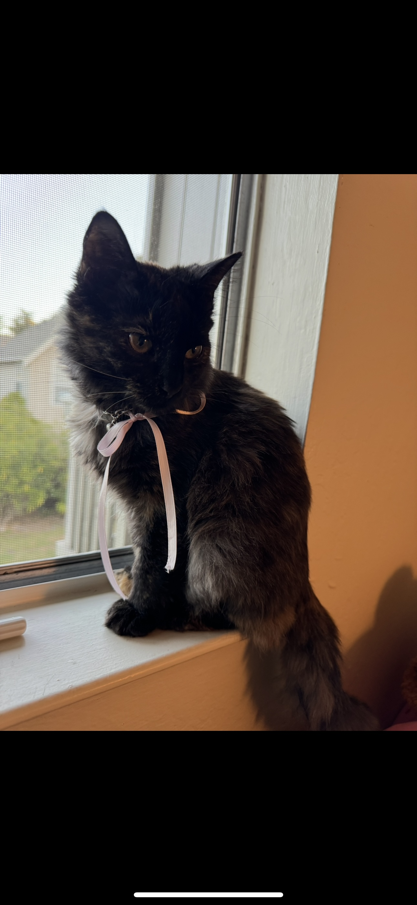
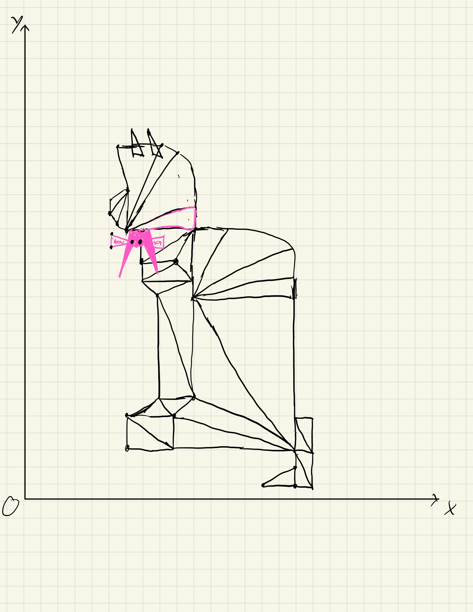

Performance Status
Shape Type: Shape Color Below: Red Green Blue Adjust: Size Adjust: [Circle] SegmentNotes to Grader:
Awesomeness: Check out the scatter button
Below you will find a picture of my cat that I used as my reference img as well as a very simple sketch using triangles.
Also, I was not able to draw my cats face looking towards the camera, so I went with the side view.


Author: Jose Valencia
Email: Joanvale@ucsc.edu